Education / 2021 - 2025
Nguyen Tat Thanh University
Degree of Engineer in Information Technology (Artificial Intelligence)
3.75/4.00Graduation classification: Excellent
Aspiring AI Engineer
Current interests
AI Agents.
LLM Systems.
Information Technology graduate specializing in Artificial Intelligence from Nguyen Tat Thanh University, currently exploring AI agents and LLM systems through applied AI and web projects.
Hoc Mon, Ho Chi Minh City / @LeTPhu ↗
About
My AI internship and work in training and data operations involved data processing and ETL, ML/DL experiments, record standardization, and learning material coordination.
Recent work includes a multichannel CRM, a multi-provider agent environment, and multimodal AI studies. I document implementation details, tests, and results within each project's scope.
View A4 resume ↗Education / 2021 - 2025
Degree of Engineer in Information Technology (Artificial Intelligence)
Projects & research
Notes on the work, technologies and findings within each project's scope.
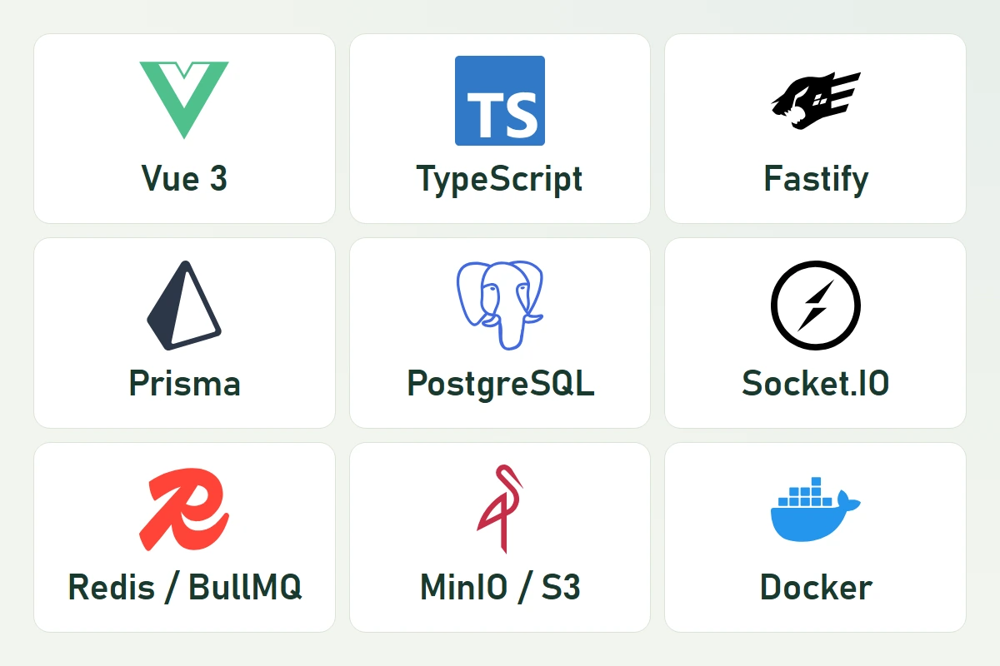
A multichannel CRM covering customer management, Social Inbox, work management, and business/school operations.
Personal project
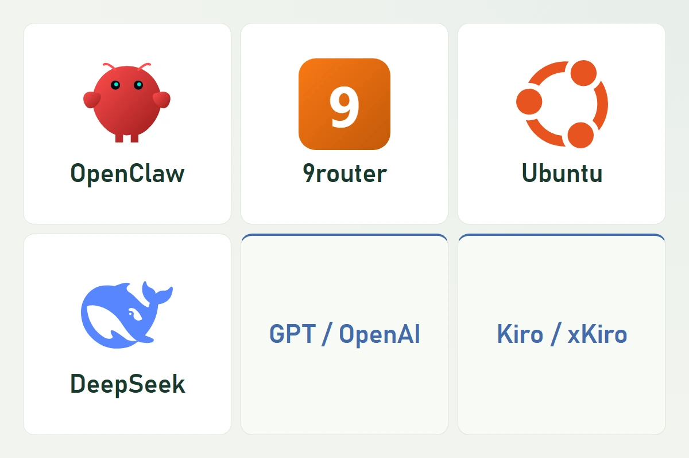
An agent environment on an Ubuntu VPS with model/provider routing within a shared workflow.
Technical practice / personal infrastructure
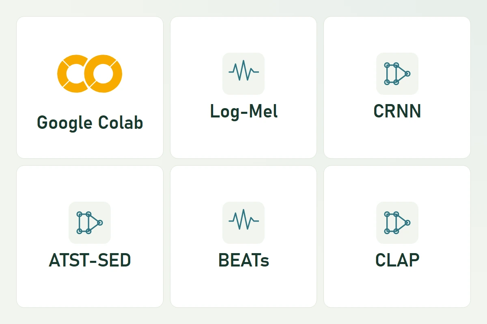
A study of Sound Event Detection models, comparing experimental inference results with published benchmarks.
Academic project - NTTU
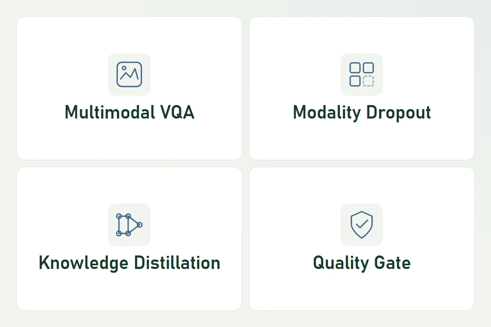
A study of robustness under missing modalities using modality dropout, knowledge distillation, and quality gating.
Academic research
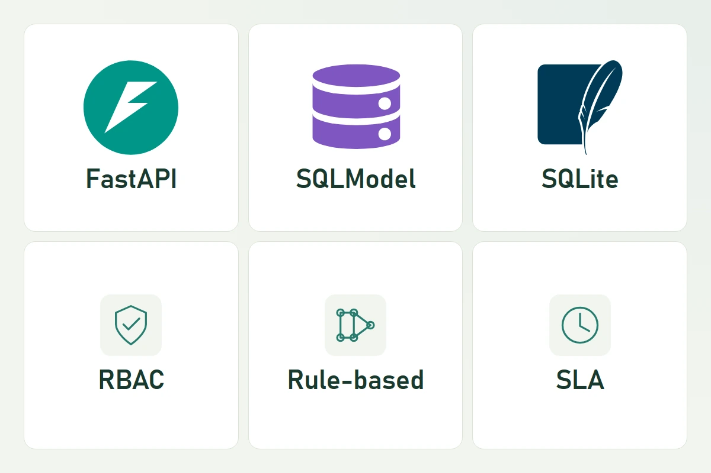
A prototype for ticketing and asset management, SLA tracking, and role-based access control, with rule-based ticket category suggestions.
Academic project - Enterprise Information Systems
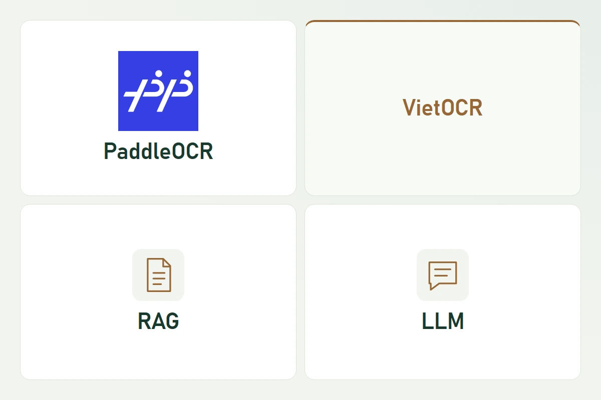
An OCR + RAG-LLM pipeline for extracting, retrieving, and answering questions about Vietnamese administrative documents.
Applied AI project
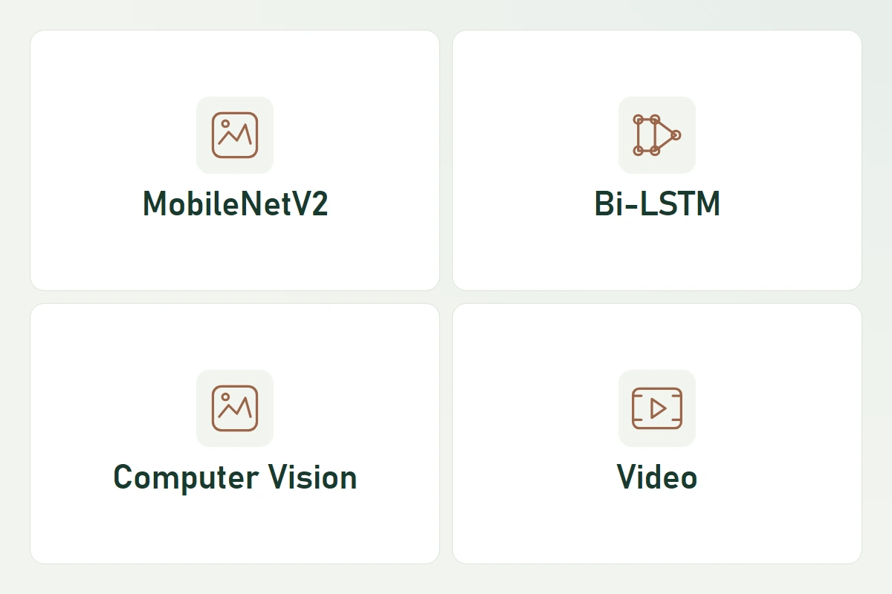
A four-member team project using MobileNetV2 and Bi-LSTM to model spatial and temporal video features.
Team Lead - 4-member team
No projects in this category yet.
Experience
The Saigon International College (SGI)
365 Ecosystem JSC (365 EJSC)
Skills
Machine learning across language, vision, and audio.
Tool workflows, provider routing and API debugging.
Web interfaces, backend services, and real-time communication.
Data, deployment environments, and system testing.
English: Technical documentation reading; basic English communication.
Certifications
Certification names, issuer, and validity dates from the original documents. Select an image to view the complete certificate.
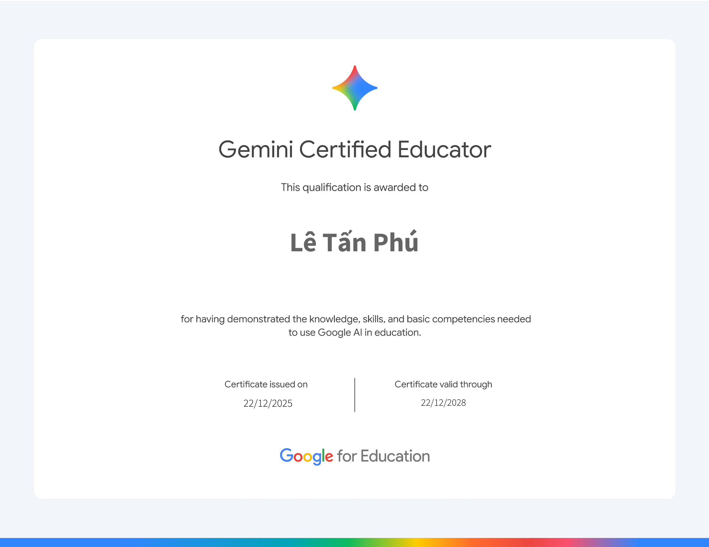
The image could not load. Try opening the original.Google for Education
Recognizes the knowledge, skills, and basic competencies needed to use Google AI in education.
Awarded to: Lê Tấn Phú
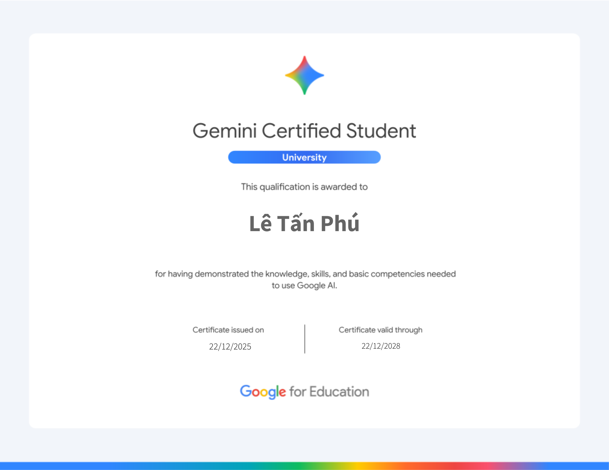
The image could not load. Try opening the original.Google for Education
University-level certification recognizing the knowledge, skills, and basic competencies needed to use Google AI.
Awarded to: Lê Tấn Phú
Achievements
Milestones from the CV
GPA 3.75/4.00 - Nguyen Tat Thanh University.
Awarded an academic scholarship in each of the four university years.
Top 5 Finalist; Consolation Prize; Top 5 most popular products.
Faculty of Information Technology - Nguyen Tat Thanh University.
Evidence archive / 05
Awards and participation certificates from competitions and learning activities. Select an image to read the full document.
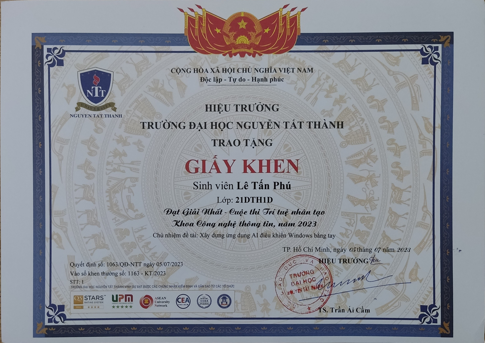
The image could not load. Try opening the original.Award for an AI application that controls Windows using hand gestures, led by Le Tan Phu.
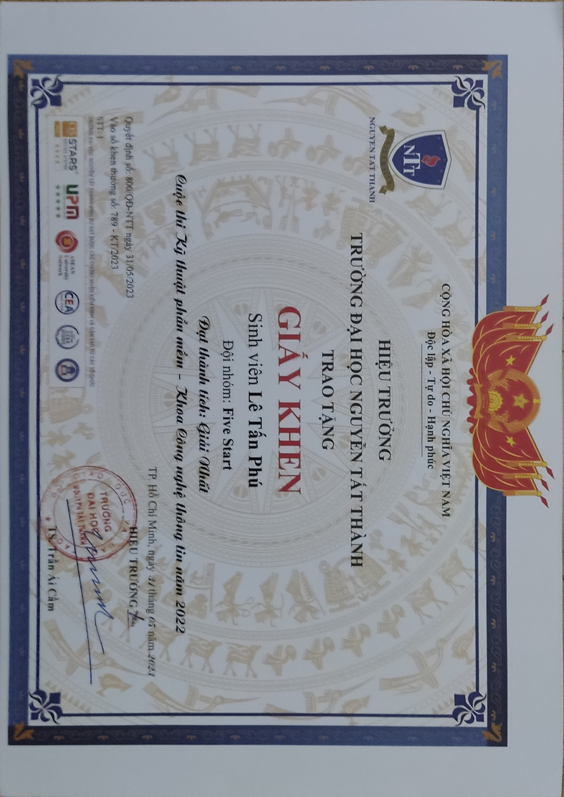
The image could not load. Try opening the original.Award presented to Le Tan Phu of team Five Start in the Faculty of Information Technology Software Engineering Competition.
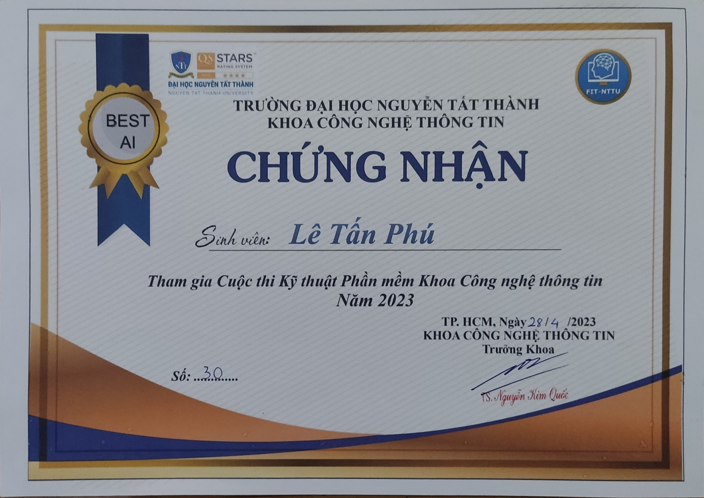
The image could not load. Try opening the original.Certificate of participation in the 2023 Software Engineering Competition, awarded to Le Tan Phu.
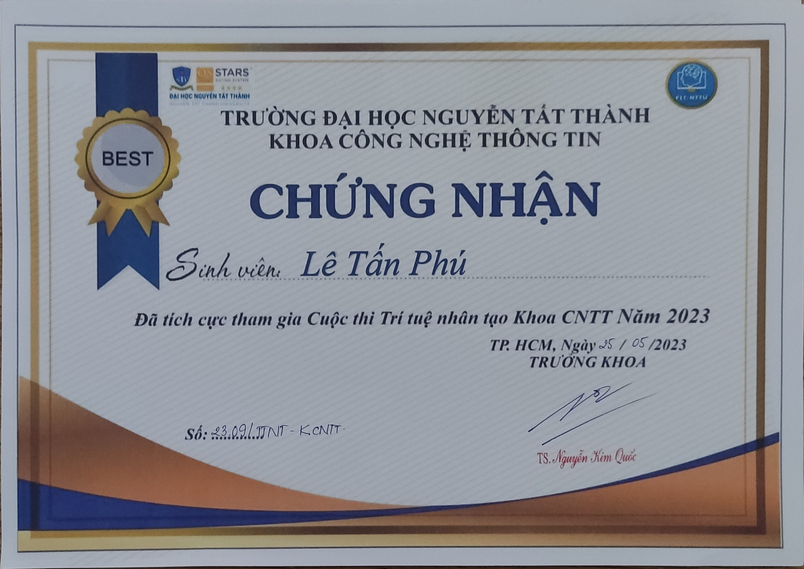
The image could not load. Try opening the original.Certificate recognizing active participation in the Faculty of Information Technology Artificial Intelligence Competition in 2023.
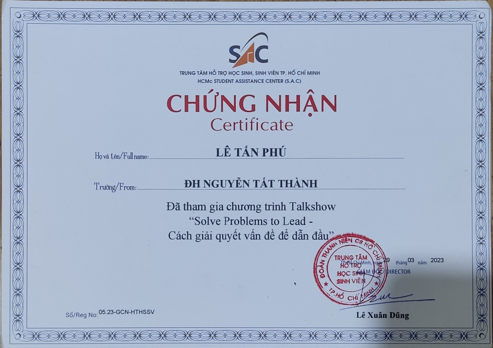
The image could not load. Try opening the original.Certificate of attendance at the “Solve Problems to Lead” talk show, awarded to Le Tan Phu.
Document images retain their original content.
Contact
Interested in applied AI, AI agents, LLM systems, or web development? You can reach me by email or on GitHub.
Send an email